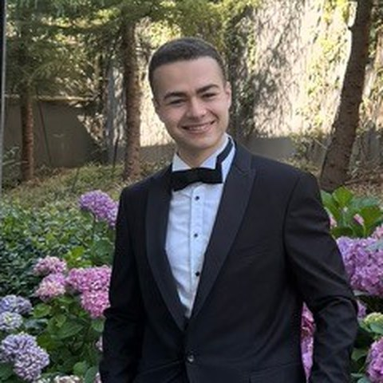

London · Computer Science
Hello, I'm Tan Kap.
I'm a second-year Computer Science undergraduate at UCL.
Right now I'm working on HoloRepository 2027, a clinical 3D imaging platform built through UCL IXN with industry and clinical partners.
Away from the keyboard, I'm at a different keyboard: I've been playing the piano for about eight years. Rachmaninoff and Scriabin are my favourites.